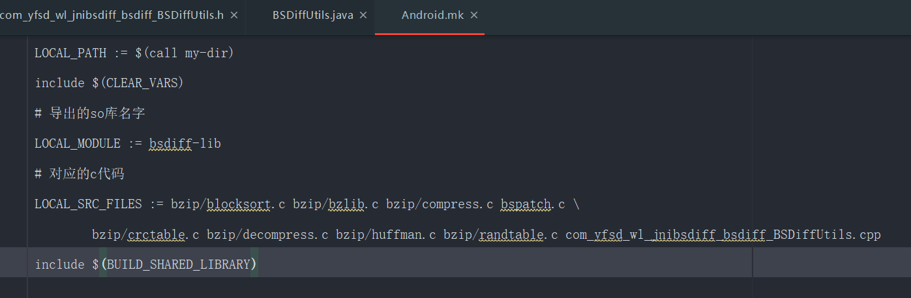
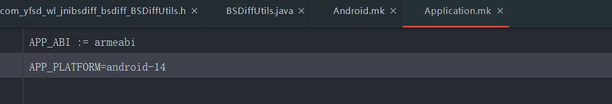
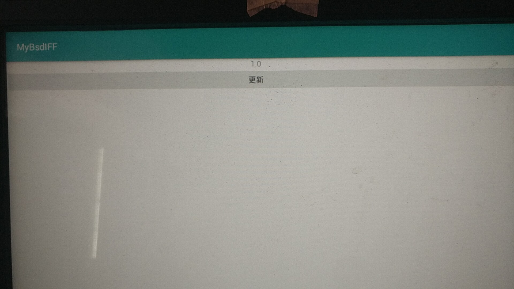
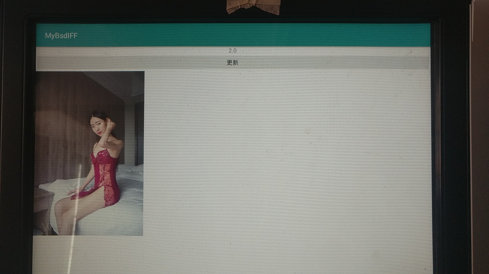

版本迭代核心技术之BSDiff
工具
window
-
使用
1
bsdiff.exe old.apk new.apk patchFileName
-
- bspatch.c 做合成
- bsdiff.c 作区分
新建JNI项目实现
导入c文件
拷贝bspatch.c文件到cpp目录下
将bzip2-1.0.6中Makefile中所列出来的.c文件拷贝到项目对应的新建目录
1
2
3
4
5
6
7OBJS= blocksort.o \
huffman.o \
crctable.o \
randtable.o \
compress.o \
decompress.o \
bzlib.o

Java文件
1 | //创建jni方法，alt+enter 在native-lib.cpp生成 c语言方法体 |
修改c文件
修改bspatch.c文件
1
2
3
4
5
6
7
8
9
10
11
12
13
14
//#include "bzip/bzlib.h" //as版本》3.1 应该是这样
....
//将main修改为p_main 为了避免其他的有类似方法，并在native-lib.cpp中声明出来
int p_main(int argc,char * argv[])
{
....
}native-lib.cpp 修改
1
2
3
4
5
6
7
8
9
10
11
12
13
14
15
16
17
18
19
20
21
22
//重新声明bspatch.c的main
extern "C"{
extern int p_main(int argc,char * argv[]);
}
extern "C"
JNIEXPORT void JNICALL
Java_com_yfsd_wl_mybsdiff_MainActivity_bsPatch(JNIEnv *env, jobject instance, jstring oldApk_,
jstring patch_, jstring output_) {
//将java字符串转为c/c++ 的字符串 或者说 转换为utf-8的char指针
const char *oldApk = env->GetStringUTFChars(oldApk_, 0);
const char *patch = env->GetStringUTFChars(patch_, 0);
const char *output = env->GetStringUTFChars(output_, 0);
//bspatch oldfile newfile patchfile
const char *argv[] = {"",oldApk,output,patch};
p_main(4, (char **)argv);//3.1需要强转 p_main(4,argv)
// 释放只想unicode格式的char指针
env->ReleaseStringUTFChars(oldApk_, oldApk);
env->ReleaseStringUTFChars(patch_, patch);
env->ReleaseStringUTFChars(output_, output);
}
CMakeList.txt修改
1 | cmake_minimum_required(VERSION 3.4.1) |
build.gradle
1 | externalNativeBuild { |
（🤣下面是失败案例，不要看了）
手动生成JNI实现
src手动创建jni文件夹
生成对应头文件
- cd到对应目录 执行：javac -h . xxxxx.java

拷贝文件
将生成的h文件剪切到jni目录下，并复制一份重命名为.cpp文件，并实现
拷贝对应需要的第三方文件，创建Android.mk、Application.mk

Android.mk

Application.mk

build.gradle

效果
- 版本一
 - 布局文件新加图片，build.gradle修改版本编号
- 拷贝old.apk以及new.apk在bsdiff目录下，执行
bsdiff.exe old.apk new.apk patchFile指令，生成patchFile。 - 代码中是将old.apk以及patchFile拷贝到sdcard目录下。路径可自定义
- 触发更新方法
- 版本二

补充
- 权限
- android 7.0需要配置FileProvider
- 服务端生成的差分包大小接近或者超过新包大小，没有必要进行差分更新。因为服务器一般会保存几个稳定、经典的版本和差分包。用户做请求的时候，后台已经判断出事需要全局更新还是增量更新
- 下载到本地是否需要签名校验，参考实际情况
- 有新版本，服务端先生成差分包。而不是等请求再去生成
问题
- Android.mk 需要引用全部的c/c++文件
- 注意区分 .c 和.cpp的写法区别
传送门
- 本文链接：https://www.wl960127.top/posts/f69a5f5e/
- 版权声明：本站内容均为个人学习笔记,不涉及商业用途，仅提供学习参考,第三方摘录已署名链接,未署名请评论添加,转载署名来源即可。
分享